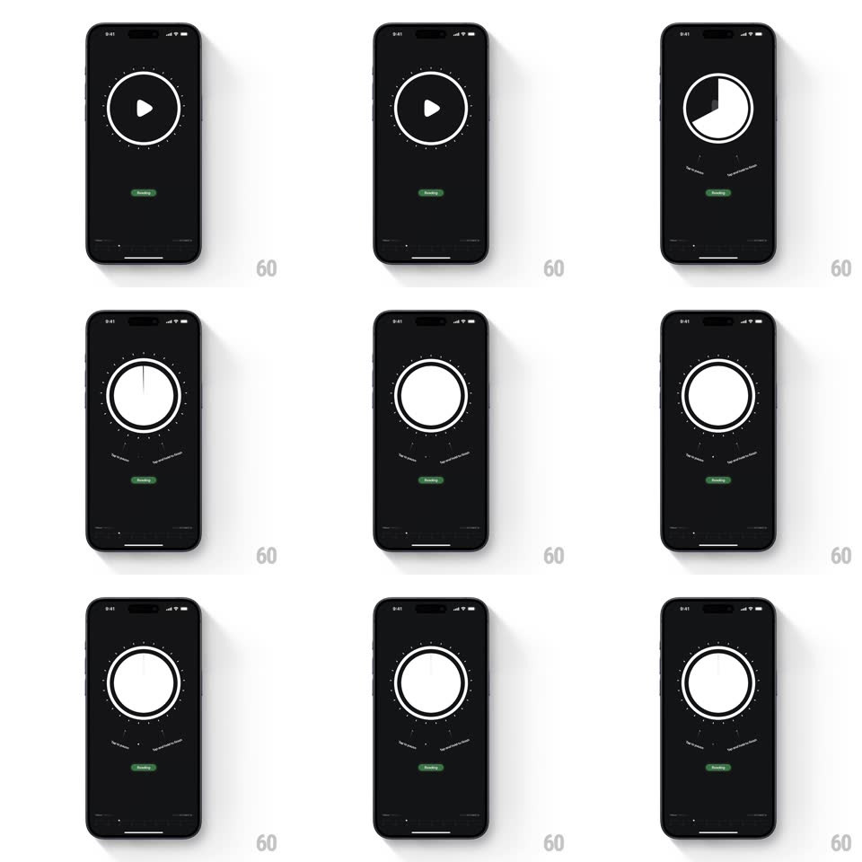

Media
Frame-by-frame

Rebuild this interaction 1:1: Emphasis's timer tooltips - tapping the circular play button fills the dial into a white disc (pie-timer state), while two curved instructional tooltips spring out along an arc below it ("Swipe left to pause..." style hints), hugging the dial's curvature.

Rebuild this interaction 1:1: Emphasis's timer tooltips - tapping the circular play button fills the dial into a white disc (pie-timer state), while two curved instructional tooltips spring out along an arc below it ("Swipe left to pause..." style hints), hugging the dial's curvature.
## Integration
Integration: stack-agnostic spec - springs given as stiffness/damping, timed motions as duration + curve; map every value to your framework and animation library of choice.
## Scene
Near-black screen: the big circular dial (ring + play triangle) center-top, a green "Reading" tag beneath it, and two small curved tooltip labels arcing under the dial like a smile, following its curvature.
## Motion spec
Pattern: dial fill with springy curved tooltip reveal.
- Tap: the play triangle dissolves (150ms) and the dial fills into a white disc (pie sweep from 12 o'clock, ~400ms).
- As the fill lands, the two tooltips expand into view: each scales from its inner anchor point (scale 0.5 -> 1.05 -> 1, spring ~380/18, 300ms) and fades in, the left tooltip leading by ~60ms.
- The tooltips sit on an arc - each is rotated to match its position on the curve (rotation animates in with the scale).
- The tooltips hold while the timer disc idles, then fade out (250ms) on first interaction.
## Calibration
- The tooltips follow the dial's curvature exactly - they read as part of the dial, not floating labels.
- The expansion springs outward from the dial, not from the label centers.
## Reduced motion
Tooltips fade in at final size and rotation (200ms).
## Don't miss
- The dial fill and the tooltips are one gesture - the tooltips lag the fill by a beat, not by a second.
- Tooltip text is small and dim - instructional, not a headline.